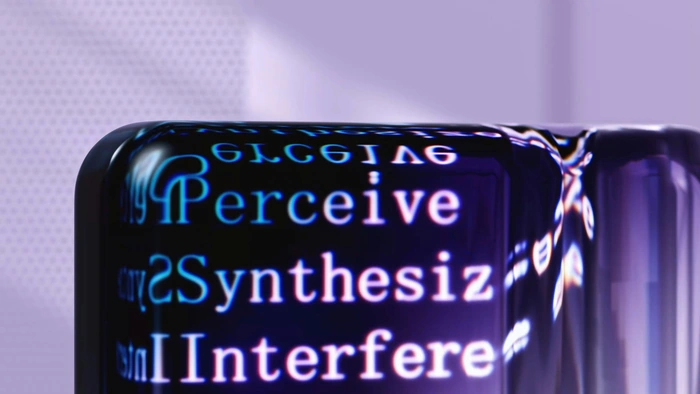

Welcome to
Harmonic
Choose a style to get started.
Towards More Efficient Long-Context Language Modeling
science.org · 2h

5318
▲ 53 ▤ 18
I'd love to see how this performs on a whole codebase. Finding the right context is often harder than fitting it into the window.
Get started